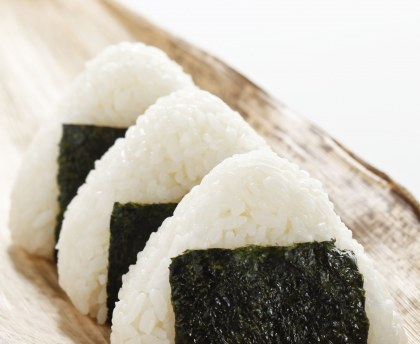

Onigiri
Pour 6 personnes, 30 minutes de préparation, 40 minutes de cuisson (poisson).

Ingrédients:
2 riz , préparé à la façon japonaise (recherchez la préparation façon Gohan) 1 prune séchée, débarrassée de son noyau et écrasée) Du filet de saumon (bien salé et grillé au four, émiettez-le ensuite) 1.5 feuille de nori (coupée en 4 dans la longueur) Du sel Du Takuan (radis blanc séché et mariné, on en trouve dans les épiceries japonaises)
Préparation
- 1: Il faut faire griller le poisson au four ou sur du feu : utilisez une grille pour cette opération.
- 2: Préparez tous les ingrédients sur la table : Nori sur une grande assiette qui va accueillir les Onigiri; saumon grillé et émietté; prune ecrasée; un bol d'eau ; riz dans un grand saladier; sel.
- 3: Mouillez bien vos deux mains et mettez généreusement du sel sur les deux mains.
- 4: Prenez du riz sur une main (mains bien remplie) et mettez un morceau de saumon au milieu du riz
- 5: Recouvrez avec du riz d'une quantité égale et pressez-le avec l'autre main, de manière à former le sommet d'un triangle
- 6: Retournez l'ensemble et continuez à faire les 2 autres sommets du triangle.
- 7: Aplatissez les 2 faces et mettez la feuille de Nori au centre d'un coté du triangle afin d'entourer la boule.
- 8: Recommencez avec la prune séchée.
- 9: Dégustez!
Recette proposé par: HeadQuaker